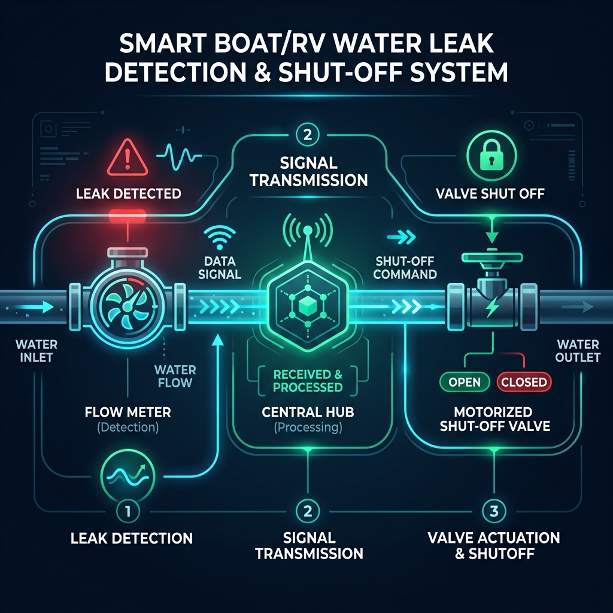
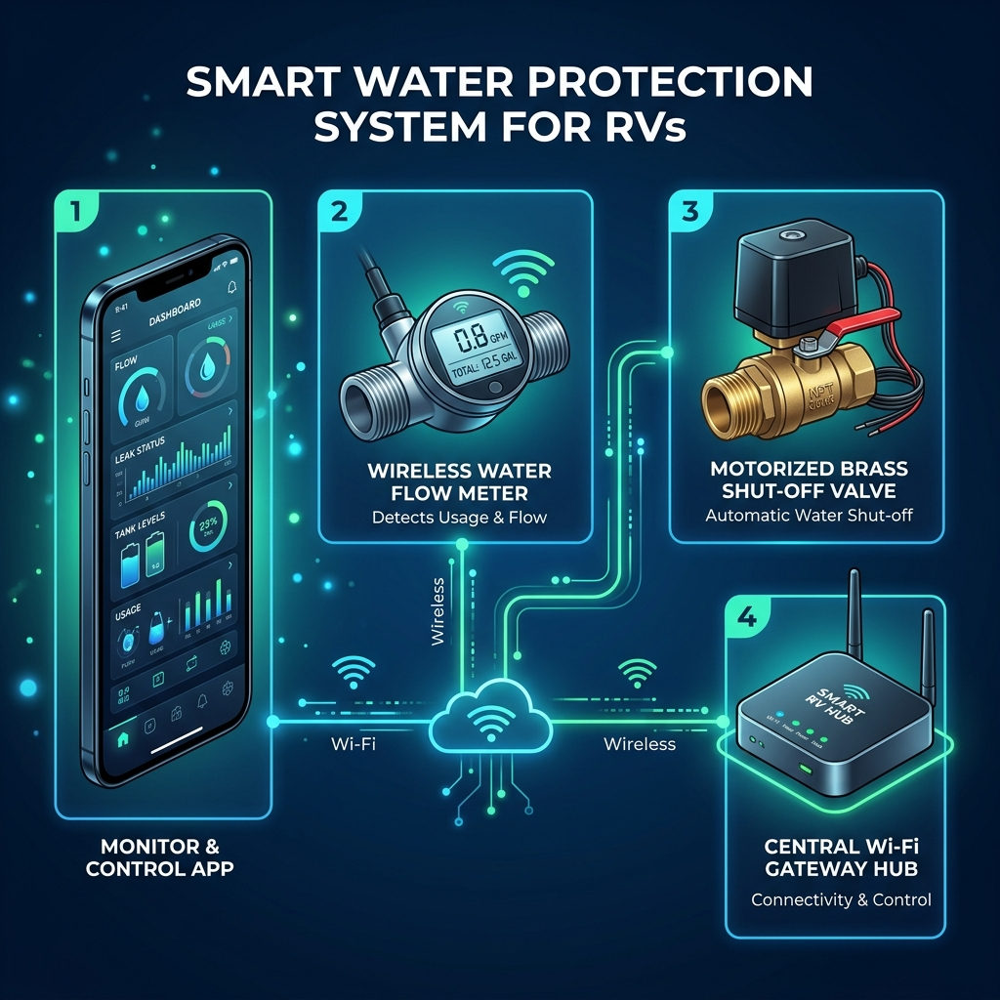

The ultimate smart local water safety dashboard. Protect your vessel or RV from burst pipes and catastrophic flooding using LinkTap.
Launch Live Web DashboardBoats and RVs are extremely susceptible to water damage from burst pipes when connected to "city water" or dock supply. Traditional water timers aren't designed for this. Boat & RV Guardian acts as a smart proxy for the LinkTap smart valve.

By connecting directly over your Local Wi-Fi Network to the LinkTap Gateway, the Guardian app sends automated, continuous "heartbeat" signals. If a pipe bursts and water runs longer than your configured safe limit, the valve automatically snaps shut. If your internet goes down, or if the dashboard is closed, the system falls back to safety and shuts off the water.

A heavy-duty, motorized brass water valve installed between your hose and your RV/Boat. It shuts off the water supply mechanically.
The central hub that talks to the valve via Zigbee and connects to your local Wi-Fi router. It handles the API requests from the Guardian app.
Measures exact gallons/liters used. The Guardian app can use this data to shut off the water after a precise volume limit is reached.
This software. A persistent dashboard that overrides the LinkTap's default behavior, keeping the water flowing as long as the app is running and no limits are breached.
For the fastest response time and internet-free reliability, enable the Local HTTP API:
192.168.1.150).This is the standard mode for continuous protection. Set a Target Time (e.g., 20 minutes) and a Volume Limit (e.g., 30 Gallons). The Guardian app will tell the valve to stay open. Every few seconds, the app resets the timer. If the app crashes, or Wi-Fi drops, the valve will count down from 20 minutes and automatically shut off. Auto-Restart (Loop) automatically restarts the 20-minute countdown when the time runs out, meaning water stays on indefinitely as long as the app is running.
Need to fill your RV's fresh water tank with exactly 40 gallons? Enter 40 in the volume box and hit Start Custom Run. The valve will turn on and automatically shut off the moment 40 gallons have passed through the flow meter.
Don't have the hardware yet? Turn on Mock Mode in settings. The app will simulate a virtual gateway so you can test how the timers, auto-restarts, and usage history features work without real water flowing.